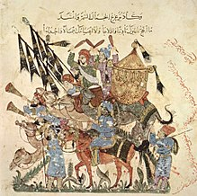
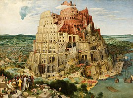
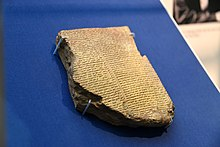
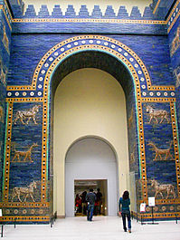
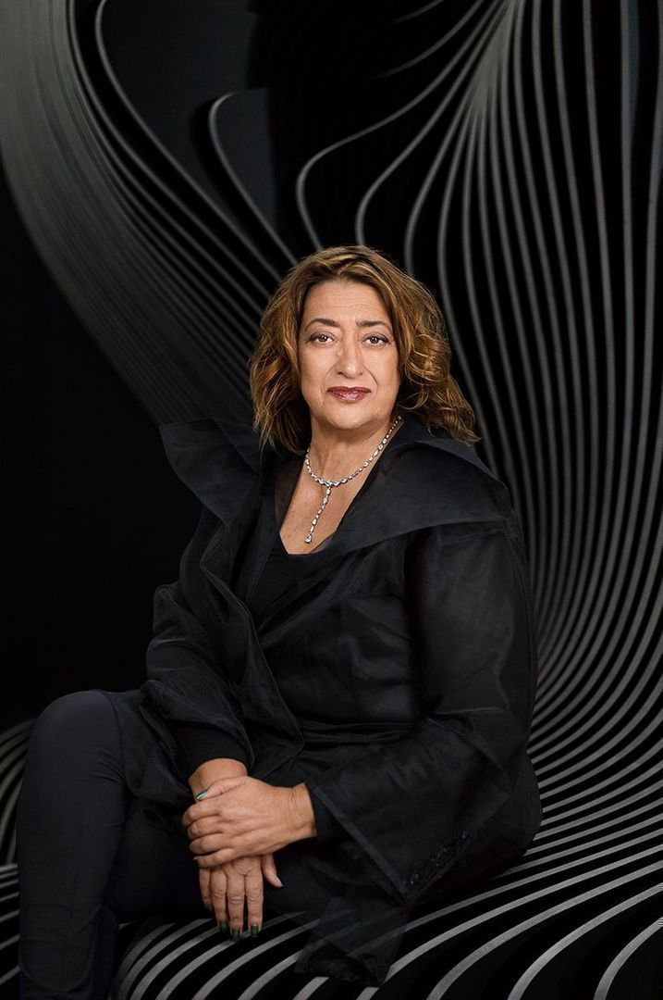
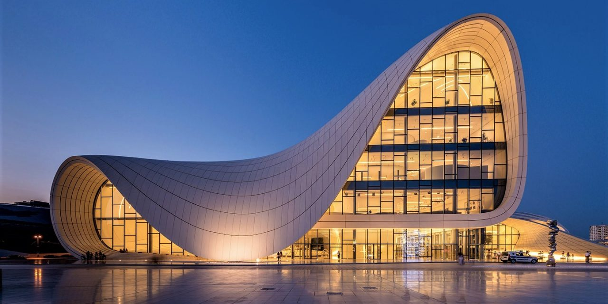
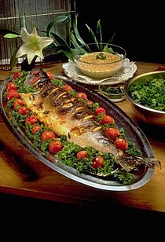

Art

Iraq's art has a deep heritage that extends back in time to ancient Mesopotamian art. Iraq has one of the longest written traditions in the world. For centuries, the capital, Baghdad was the Medieval centre of the literary and artistic Arab world, but its artistic traditions suffered at the hands of the Mongol invaders in the 13th century. Baghdad evolved into a significant cultural, commercial, and intellectual center of the Muslim world. This, in addition to housing several key academic institutions, including the House of Wisdom, as well as hosting a multiethnic and multi-religious environment, garnered the city a worldwide reputation as the Centre of Learning.
Languages

The main languages spoken in Iraq are Mesopotamian Arabic and Kurdish, followed by the Iraqi Turkmen/Turkoman dialect of Turkish, and the Neo-Aramaic languages (specifically Chaldean and Assyrian). Arabic and Kurdish are written with versions of the Arabic script. Since 2005, the Turkmen/Turkoman have switched from the Arabic script to the Turkish alphabet. In addition, the Neo-Aramaic languages use the Syriac script. Other smaller minority languages include Mandaic, Shabaki, Armenian, Circassian and Persian.
According to the Constitution of Iraq:
The Arabic language and the Kurdish language are the two official languages of Iraq. The right of Iraqis to educate their children in their mother tongue, such as Turkmen, Syriac, and Armenian shall be guaranteed in government educational institutions in accordance with educational guidelines, or in any other language in private educational institutions.
a list of gifts, Adab, 26th century BC Sumerian "native tongue" is the language of ancient Sumer and a language isolate that was spoken in Mesopotamia, in the ancient Fertile Crescent (modern-day Iraq). The Sumerian language is the earliest known written language. The "proto-literate" period of Sumerian writing spans c. 3300 to 3000 BC. In this period, records are purely logographic, with phonological content. The oldest document of the proto-literate period is the Kish tablet. Falkenstein (1936) lists 939 signs used in the proto-literate period (late Uruk, 34th to 31st centuries).
During the 3rd millennium BC, an intimate cultural symbiosis developed between the Sumerians and the Semitic-speaking Akkadians, which included widespread bilingualism. The influence of Sumerian and the East Semitic language Akkadian on each other is evident in all areas, from lexical borrowing on a substantial scale to syntactic, morphological, and phonological convergence. This has prompted scholars to refer to Sumerian and Akkadian in the third millennium BC as a Sprachbund.
Literature
Sumerian literature constitutes the earliest known corpus of recorded literature, including the religious writings and other traditional stories maintained by the Sumerian civilization and largely preserved by the later Akkadian and Babylonian empires. These records were written in the Sumerian language during the Middle Bronze Age.
The Sumerians invented one of the first writing systems, developing Sumerian cuneiform writing out of earlier proto-writing systems by about the 30th century BC. The Sumerian language remained in official and literary use in the Akkadian and Babylonian empires, even after the spoken language disappeared from the population; literacy was widespread, and the Sumerian texts that students copied heavily influenced later Babylonian literature.
Poetry

PoetryPoetry is the most dominant form of literature in Iraq and the country is known for having notable poets.
An ancient Mesopotamian poem gives the first known story of the invention of writing:
Because the messenger's mouth was heavy and he couldn't repeat [the message], the Lord of Kulaba patted some clay and put words on it, like a tablet. Until then, there had been no putting words on clay.
Gilgamesh was a major hero in ancient Mesopotamian mythology and the protagonist of the Epic of Gilgamesh.
Iraqi Architecture

The architecture of Mesopotamia is ancient architecture of the region of the Tigris–Euphrates river system (also known as Mesopotamia), encompassing several distinct cultures and spanning a period from the 10th millennium BC, when the first permanent structures were built in the 6th century BC. Among the Mesopotamian architectural accomplishments are the development of urban planning, the courtyard house, and ziggurats. No architectural profession existed in Mesopotamia; however, scribes drafted and managed construction for the government, nobility, or royalty. Iraq is known for having one of the best architects in the world such as Zaha Hadid, Rifat Chadirji and Hisham N. Ashkouri among others.
Modern Architecture


Zaha Hadid; 31 October 1950 – 31 March 2016 was a British Iraqi architect, artist and designer, recognized as a major figure in architecture of the late 20th and early 21st centuries. She is known for being influenced by Sumerian ancient cities.
She was described by The Guardian as the "Queen of the curve", who liberated architectural geometry, giving it a whole new expressive identity". Her major works include the London Aquatics Centre for the 2012 Olympics, the Broad Art Museum, Rome's MAXXI Museum, and the Guangzhou Opera House. Some of her awards have been presented posthumously, including the statuette for the 2017 Brit Awards. Several of her buildings were still under construction at the time of her death, including the Daxing International Airport in Beijing, and the Al Wakrah Stadium in Qatar, a venue for the 2022 FIFA World Cup.Hadid was the first woman to receive the Pritzker Architecture Prize, in 2004. She received the UK's most prestigious architectural award, the Stirling Prize, in 2010 and 2011.
Iraqi Cuisine

Iraqi cuisine or Mesopotamian cuisine has a long history going back some 10,000 years – to the Sumerians, Babylonians, Assyrians, and Ancient Persians. Tablets found in ancient ruins in Iraq show recipes prepared in the temples during religious festivals - the first cookbooks in the world. Ancient Iraq, or Mesopotamia was home to a sophisticated and highly advanced civilization, in all fields of knowledge - including the culinary arts.
Masghouf fish, one of Iraq's national dishes, a Mesopotamian cuisine dating back to ancient times, typically fish caught from the rivers of Euphrates and Tigris, and grilled near the river bed However, it was in the Islamic Golden Age when Baghdad was the capital of the Abbasid Caliphate that the Iraqi kitchen reached its zenith. Today, the cuisine of Iraq reflects this rich inheritance, as well as strong influences from the culinary traditions of neighbouring Persia, Turkey, and the Syria region.
Some popular dishes include Kebab (often marinated with garlic, lemon, and spices, then grilled), Gauss (grilled meat sandwich wrap, similar to Döner kebab), Bamieh (lamb, okra, and tomato stew), Quzi (lamb with rice, almonds, raisins, and spices), and salad in pita, Kubbah (minced meat ground with bulghur wheat, or rice and spices), Masgûf (grilled fish with pepper and tamarind), and Maqluba (a rice, lamb, tomato, and aubergine dish). Stuffed vegetable dishes such as Dolma and Mahshi are also popular. Machbous is also a popular dish in the south and south east of Iraq. Contemporary Iraq reflects the same natural division as ancient Mesopotamia, which consisted of Assyria in the arid northern uplands and Babylonia in the southern alluvial plain. Al-Jazira (the ancient Assyria) grows wheat and crops requiring winter chill such as apples and stone fruits. Al-Irāq (Iraq proper, the ancient Babylonia) grows rice and barley, citrus fruits, and is responsible for Iraq's position as the world's largest producer of dates.
Kitab al-tabikh is the oldest surviving Arabic cookbook, written by al-Warraq in the 10th century. It is compiled from the recipes of the 8th and 9th century courts of the Abbasid Caliphate in Baghdad. Some scholars speculate that al-Warraq may have prepared the manuscript on behalf of a patron, the Hamdanid prince Sayf al-Dawla, who sought to improve the cultural prestige of his own court in Aleppo as the court in Baghdad had started to decline.